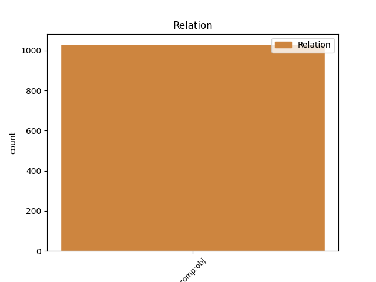
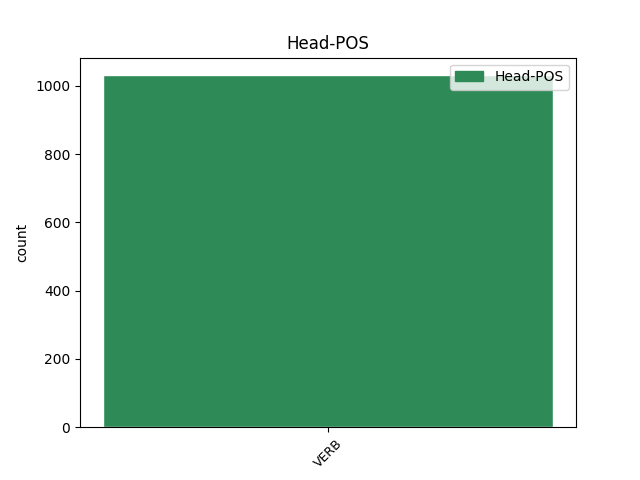
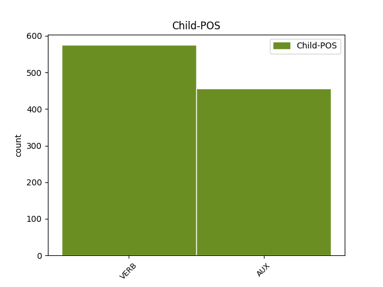

Distribution of features within this leaf



Agreement Rules sorted by frequency.
- When the dependent token is the direct object complements(comp:obj) of the head token, and the head token is VERB
1 " _ _ _ _ 0 _ _ _
2 Somos ser AUX AUX Mood=Ind|Number=Plur|Person=1|Tense=Pres|VerbForm=Fin 10 comp:obj _ _
3 víctimas _ _ _ _ 0 _ _ _
4 de _ _ _ _ 0 _ _ _
5 la _ _ _ _ 0 _ _ _
6 arquitectura _ _ _ _ 0 _ _ _
7 basura _ _ _ _ 0 _ _ _
8 " _ _ _ _ 0 _ _ _
9 , _ _ _ _ 0 _ _ _
10 dice decir VERB VERB Mood=Ind|Number=Sing|Person=3|Tense=Pres|VerbForm=Fin 0 _ _ _
11 una _ _ _ _ 0 _ _ _
12 mujer _ _ _ _ 0 _ _ _
13 que _ _ _ _ 0 _ _ _
14 recuerda _ _ _ _ 0 _ _ _
15 que _ _ _ _ 0 _ _ _
16 ya _ _ _ _ 0 _ _ _
17 hubo _ _ _ _ 0 _ _ _
18 problemas _ _ _ _ 0 _ _ _
19 por _ _ _ _ 0 _ _ _
20 una _ _ _ _ 0 _ _ _
21 piscina _ _ _ _ 0 _ _ _
22 mal _ _ _ _ 0 _ _ _
23 construida _ _ _ _ 0 _ _ _
24 . _ _ _ _ 0 _ _ _
Disagree Examples:
1 La _ _ _ _ 0 _ _ _
2 inversión _ _ _ _ 0 _ _ _
3 en _ _ _ _ 0 _ _ _
4 investigación _ _ _ _ 0 _ _ _
5 básica _ _ _ _ 0 _ _ _
6 es ser AUX AUX Mood=Ind|Number=Sing|Person=3|Tense=Pres|VerbForm=Fin 17 comp:obj _ _
7 el _ _ _ _ 0 _ _ _
8 camino _ _ _ _ 0 _ _ _
9 para _ _ _ _ 0 _ _ _
10 el _ _ _ _ 0 _ _ _
11 crecimiento _ _ _ _ 0 _ _ _
12 y _ _ _ _ 0 _ _ _
13 la _ _ _ _ 0 _ _ _
14 prosperidad _ _ _ _ 0 _ _ _
15 económica _ _ _ _ 0 _ _ _
16 , _ _ _ _ 0 _ _ _
17 afirmaron afirmar VERB VERB Mood=Ind|Number=Plur|Person=3|Tense=Past|VerbForm=Fin 0 _ _ _
18 hoy _ _ _ _ 0 _ _ _
19 empresarios _ _ _ _ 0 _ _ _
20 , _ _ _ _ 0 _ _ _
21 el _ _ _ _ 0 _ _ _
22 embajador _ _ _ _ 0 _ _ _
23 de _ _ _ _ 0 _ _ _
24 EEUU _ _ _ _ 0 _ _ _
25 y _ _ _ _ 0 _ _ _
26 el _ _ _ _ 0 _ _ _
27 director _ _ _ _ 0 _ _ _
28 de _ _ _ _ 0 _ _ _
29 investigación _ _ _ _ 0 _ _ _
30 de _ _ _ _ 0 _ _ _
31 la _ _ _ _ 0 _ _ _
32 Comunidad _ _ _ _ 0 _ _ _
33 de _ _ _ _ 0 _ _ _
34 Madrid _ _ _ _ 0 _ _ _
35 , _ _ _ _ 0 _ _ _
36 quienes _ _ _ _ 0 _ _ _
37 abogaron _ _ _ _ 0 _ _ _
38 por _ _ _ _ 0 _ _ _
39 elevar _ _ _ _ 0 _ _ _
40 la _ _ _ _ 0 _ _ _
41 " _ _ _ _ 0 _ _ _
42 cultura _ _ _ _ 0 _ _ _
43 científica _ _ _ _ 0 _ _ _
44 " _ _ _ _ 0 _ _ _
45 de _ _ _ _ 0 _ _ _
46 los _ _ _ _ 0 _ _ _
47 ciudadanos _ _ _ _ 0 _ _ _
48 y _ _ _ _ 0 _ _ _
49 la _ _ _ _ 0 _ _ _
50 " _ _ _ _ 0 _ _ _
51 cultura _ _ _ _ 0 _ _ _
52 de _ _ _ _ 0 _ _ _
53 la _ _ _ _ 0 _ _ _
54 innovación _ _ _ _ 0 _ _ _
55 " _ _ _ _ 0 _ _ _
56 de _ _ _ _ 0 _ _ _
57 los _ _ _ _ 0 _ _ _
58 empresarios _ _ _ _ 0 _ _ _
59 . _ _ _ _ 0 _ _ _
1 El _ _ _ _ 0 _ _ _
2 menor _ _ _ _ 0 _ _ _
3 coste _ _ _ _ 0 _ _ _
4 de _ _ _ _ 0 _ _ _
5 las _ _ _ _ 0 _ _ _
6 licencias _ _ _ _ 0 _ _ _
7 de _ _ _ _ 0 _ _ _
8 telefonía _ _ _ _ 0 _ _ _
9 móvil _ _ _ _ 0 _ _ _
10 UMTS _ _ _ _ 0 _ _ _
11 en _ _ _ _ 0 _ _ _
12 España _ _ _ _ 0 _ _ _
13 sobre _ _ _ _ 0 _ _ _
14 otros _ _ _ _ 0 _ _ _
15 países _ _ _ _ 0 _ _ _
16 permitirá permitir VERB VERB Mood=Ind|Number=Sing|Person=3|Tense=Fut|VerbForm=Fin 35 comp:obj _ _
17 abrir _ _ _ _ 0 _ _ _
18 el _ _ _ _ 0 _ _ _
19 mercado _ _ _ _ 0 _ _ _
20 del _ _ _ _ 0 _ _ _
21 móvil _ _ _ _ 0 _ _ _
22 a _ _ _ _ 0 _ _ _
23 operadores _ _ _ _ 0 _ _ _
24 de _ _ _ _ 0 _ _ _
25 servicios _ _ _ _ 0 _ _ _
26 sin _ _ _ _ 0 _ _ _
27 red _ _ _ _ 0 _ _ _
28 antes _ _ _ _ 0 _ _ _
29 que _ _ _ _ 0 _ _ _
30 en _ _ _ _ 0 _ _ _
31 otros _ _ _ _ 0 _ _ _
32 países _ _ _ _ 0 _ _ _
33 europeos _ _ _ _ 0 _ _ _
34 , _ _ _ _ 0 _ _ _
35 dijo decir VERB VERB Mood=Ind|Number=Sing|Person=3|Tense=Past|VerbForm=Fin 0 _ _ _
36 hoy _ _ _ _ 0 _ _ _
37 el _ _ _ _ 0 _ _ _
38 presidente _ _ _ _ 0 _ _ _
39 de _ _ _ _ 0 _ _ _
40 la _ _ _ _ 0 _ _ _
41 Comisión _ _ _ _ 0 _ _ _
42 del _ _ _ _ 0 _ _ _
43 Mercado _ _ _ _ 0 _ _ _
44 de _ _ _ _ 0 _ _ _
45 las _ _ _ _ 0 _ _ _
46 Telecomunicaciones _ _ _ _ 0 _ _ _
47 , _ _ _ _ 0 _ _ _
48 José _ _ _ _ 0 _ _ _
49 María _ _ _ _ 0 _ _ _
50 Vázquez _ _ _ _ 0 _ _ _
51 Quintana _ _ _ _ 0 _ _ _
52 . _ _ _ _ 0 _ _ _
1 " _ _ _ _ 0 _ _ _
2 Es ser AUX AUX Mood=Ind|Number=Sing|Person=3|Tense=Pres|VerbForm=Fin 46 comp:obj _ _
3 una _ _ _ _ 0 _ _ _
4 reunión _ _ _ _ 0 _ _ _
5 de _ _ _ _ 0 _ _ _
6 gran _ _ _ _ 0 _ _ _
7 trascendencia _ _ _ _ 0 _ _ _
8 puesto _ _ _ _ 0 _ _ _
9 que _ _ _ _ 0 _ _ _
10 ahí _ _ _ _ 0 _ _ _
11 se _ _ _ _ 0 _ _ _
12 hará _ _ _ _ 0 _ _ _
13 la _ _ _ _ 0 _ _ _
14 reafirmación _ _ _ _ 0 _ _ _
15 de _ _ _ _ 0 _ _ _
16 la _ _ _ _ 0 _ _ _
17 necesidad _ _ _ _ 0 _ _ _
18 de _ _ _ _ 0 _ _ _
19 la _ _ _ _ 0 _ _ _
20 unidad _ _ _ _ 0 _ _ _
21 de _ _ _ _ 0 _ _ _
22 la _ _ _ _ 0 _ _ _
23 Comunidad _ _ _ _ 0 _ _ _
24 Andina _ _ _ _ 0 _ _ _
25 , _ _ _ _ 0 _ _ _
26 de _ _ _ _ 0 _ _ _
27 la _ _ _ _ 0 _ _ _
28 unidad _ _ _ _ 0 _ _ _
29 de _ _ _ _ 0 _ _ _
30 nuestra _ _ _ _ 0 _ _ _
31 subregión _ _ _ _ 0 _ _ _
32 frente _ _ _ _ 0 _ _ _
33 a _ _ _ _ 0 _ _ _
34 los _ _ _ _ 0 _ _ _
35 grandes _ _ _ _ 0 _ _ _
36 desafíos _ _ _ _ 0 _ _ _
37 que _ _ _ _ 0 _ _ _
38 se _ _ _ _ 0 _ _ _
39 nos _ _ _ _ 0 _ _ _
40 presentan _ _ _ _ 0 _ _ _
41 por _ _ _ _ 0 _ _ _
42 la _ _ _ _ 0 _ _ _
43 globalización _ _ _ _ 0 _ _ _
44 " _ _ _ _ 0 _ _ _
45 , _ _ _ _ 0 _ _ _
46 manifestó manifestar VERB VERB Mood=Ind|Number=Sing|Person=3|Tense=Past|VerbForm=Fin 0 _ _ _
47 a _ _ _ _ 0 _ _ _
48 la _ _ _ _ 0 _ _ _
49 prensa _ _ _ _ 0 _ _ _
50 peruana _ _ _ _ 0 _ _ _
51 . _ _ _ _ 0 _ _ _
1 " _ _ _ _ 0 _ _ _
2 No _ _ _ _ 0 _ _ _
3 es ser AUX AUX Mood=Ind|Number=Sing|Person=3|Tense=Pres|VerbForm=Fin 14 comp:obj _ _
4 falta _ _ _ _ 0 _ _ _
5 de _ _ _ _ 0 _ _ _
6 información _ _ _ _ 0 _ _ _
7 , _ _ _ _ 0 _ _ _
8 es _ _ _ _ 0 _ _ _
9 ocultación _ _ _ _ 0 _ _ _
10 de _ _ _ _ 0 _ _ _
11 información _ _ _ _ 0 _ _ _
12 " _ _ _ _ 0 _ _ _
13 , _ _ _ _ 0 _ _ _
14 dijo decir VERB VERB Mood=Ind|Number=Sing|Person=3|Tense=Past|VerbForm=Fin 0 _ _ _
15 Zenarruzabeitia _ _ _ _ 0 _ _ _
16 , _ _ _ _ 0 _ _ _
17 para _ _ _ _ 0 _ _ _
18 quien _ _ _ _ 0 _ _ _
19 la _ _ _ _ 0 _ _ _
20 comparecencia _ _ _ _ 0 _ _ _
21 de _ _ _ _ 0 _ _ _
22 ayer _ _ _ _ 0 _ _ _
23 de _ _ _ _ 0 _ _ _
24 Mayor _ _ _ _ 0 _ _ _
25 Oreja _ _ _ _ 0 _ _ _
26 " _ _ _ _ 0 _ _ _
27 no _ _ _ _ 0 _ _ _
28 fue _ _ _ _ 0 _ _ _
29 de _ _ _ _ 0 _ _ _
30 recibo _ _ _ _ 0 _ _ _
31 " _ _ _ _ 0 _ _ _
32 porque _ _ _ _ 0 _ _ _
33 en _ _ _ _ 0 _ _ _
34 vez _ _ _ _ 0 _ _ _
35 de _ _ _ _ 0 _ _ _
36 " _ _ _ _ 0 _ _ _
37 responder _ _ _ _ 0 _ _ _
38 detalladamente _ _ _ _ 0 _ _ _
39 " _ _ _ _ 0 _ _ _
40 a _ _ _ _ 0 _ _ _
41 la _ _ _ _ 0 _ _ _
42 interpelación _ _ _ _ 0 _ _ _
43 del _ _ _ _ 0 _ _ _
44 PNV _ _ _ _ 0 _ _ _
45 se _ _ _ _ 0 _ _ _
46 dedicó _ _ _ _ 0 _ _ _
47 a _ _ _ _ 0 _ _ _
48 " _ _ _ _ 0 _ _ _
49 la _ _ _ _ 0 _ _ _
50 descalificación _ _ _ _ 0 _ _ _
51 de _ _ _ _ 0 _ _ _
52 un _ _ _ _ 0 _ _ _
53 grupo _ _ _ _ 0 _ _ _
54 político _ _ _ _ 0 _ _ _
55 y _ _ _ _ 0 _ _ _
56 a _ _ _ _ 0 _ _ _
57 hablar _ _ _ _ 0 _ _ _
58 de _ _ _ _ 0 _ _ _
59 cuestiones _ _ _ _ 0 _ _ _
60 que _ _ _ _ 0 _ _ _
61 no _ _ _ _ 0 _ _ _
62 tienen _ _ _ _ 0 _ _ _
63 nada _ _ _ _ 0 _ _ _
64 que _ _ _ _ 0 _ _ _
65 ver _ _ _ _ 0 _ _ _
66 , _ _ _ _ 0 _ _ _
67 utilizó _ _ _ _ 0 _ _ _
68 la _ _ _ _ 0 _ _ _
69 política _ _ _ _ 0 _ _ _
70 del _ _ _ _ 0 _ _ _
71 chipirón _ _ _ _ 0 _ _ _
72 de _ _ _ _ 0 _ _ _
73 responder _ _ _ _ 0 _ _ _
74 atacando _ _ _ _ 0 _ _ _
75 " _ _ _ _ 0 _ _ _
76 . _ _ _ _ 0 _ _ _
1 Ayllón _ _ _ _ 0 _ _ _
2 ha haber AUX AUX Mood=Ind|Number=Sing|Person=3|Tense=Pres|VerbForm=Fin 34 comp:obj _ _
3 presentado _ _ _ _ 0 _ _ _
4 un _ _ _ _ 0 _ _ _
5 escrito _ _ _ _ 0 _ _ _
6 con _ _ _ _ 0 _ _ _
7 esta _ _ _ _ 0 _ _ _
8 petición _ _ _ _ 0 _ _ _
9 , _ _ _ _ 0 _ _ _
10 firmado _ _ _ _ 0 _ _ _
11 por _ _ _ _ 0 _ _ _
12 él _ _ _ _ 0 _ _ _
13 mismo _ _ _ _ 0 _ _ _
14 y _ _ _ _ 0 _ _ _
15 otros _ _ _ _ 0 _ _ _
16 senadores _ _ _ _ 0 _ _ _
17 del _ _ _ _ 0 _ _ _
18 PSOE _ _ _ _ 0 _ _ _
19 que _ _ _ _ 0 _ _ _
20 pertenecen _ _ _ _ 0 _ _ _
21 a _ _ _ _ 0 _ _ _
22 las _ _ _ _ 0 _ _ _
23 circunscripciones _ _ _ _ 0 _ _ _
24 por _ _ _ _ 0 _ _ _
25 las _ _ _ _ 0 _ _ _
26 que _ _ _ _ 0 _ _ _
27 discurrirá _ _ _ _ 0 _ _ _
28 el _ _ _ _ 0 _ _ _
29 trazado _ _ _ _ 0 _ _ _
30 del _ _ _ _ 0 _ _ _
31 futuro _ _ _ _ 0 _ _ _
32 AVE _ _ _ _ 0 _ _ _
33 , _ _ _ _ 0 _ _ _
34 informó informar VERB VERB Mood=Ind|Number=Sing|Person=3|Tense=Past|VerbForm=Fin 0 _ _ _
35 hoy _ _ _ _ 0 _ _ _
36 en _ _ _ _ 0 _ _ _
37 una _ _ _ _ 0 _ _ _
38 nota _ _ _ _ 0 _ _ _
39 de _ _ _ _ 0 _ _ _
40 prensa _ _ _ _ 0 _ _ _
41 el _ _ _ _ 0 _ _ _
42 Grupo _ _ _ _ 0 _ _ _
43 Socialista _ _ _ _ 0 _ _ _
44 en _ _ _ _ 0 _ _ _
45 el _ _ _ _ 0 _ _ _
46 Senado _ _ _ _ 0 _ _ _
47 . _ _ _ _ 0 _ _ _